Learning Objectives
After completing this lesson, you’ll be able to:
- Understand how to share workspaces publicly with non-FME users through Flow Apps.
- Create an FME Flow Workspace App.
- Open and run a Workspace App.
Resources
- Starting workspace | C:\FMEData\Workspaces\DeployWorkflowsWithFMEFlow\share-workspaces-as-apps.fmw
FME Flow Apps
Sharing a repository is an excellent option for sharing workspaces with other users who also have access to FME Flow. However, what if you want to allow anyone to submit a job without requiring an account on FME Flow? Or what if you'd like to control the input parameters available to a user to submit a job? Or perhaps you'd like to allow another user to trigger your automation without giving them the ability to edit the automation?
You can accomplish all these using FME Flow Apps, no-code web applications accessed from a web browser that allow non-FME users to access and use FME functionality. Workspace Apps will enable you to share and run FME workspaces as web apps. Workspace Apps are similar to the Run Workspace page, but they are hosted as standalone web pages that can be accessed optionally without an FME Flow account. Similarly, Automation Apps will enable you to trigger an Automation to run. Gallery Apps act as landing pages to link to other Apps and websites.

This lesson will cover sharing workspaces with Workspace Apps. For more information on Automation Apps, see Getting Started with Automation Apps and Job Orchestration in Automations. For more information on Gallery Apps, see Getting Started with Gallery Apps. Check out the Create Data Integration Apps learning path for new Flow Apps content on the FME Academy.
Creating Workspace Apps
To create a Workspace App, click Create Workspace App under the Flow Apps menu. Then, you'll fill out a form that selects and configures the workspace to run in the App.
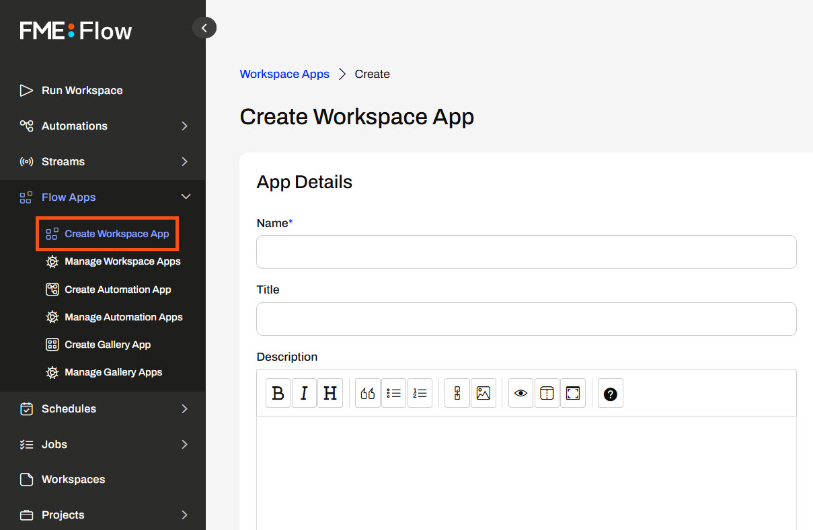
After you provide your App a name, title, and description, you must select the workspace and service with which it will run. By default, Apps will expire in 10 years; you can modify this setting, though. You can Require Authentication for your App, meaning users will need to log into FME Flow to access the App. If you want your App to be publicly accessible, you should leave Require Authentication off; anyone with the link to your App can access it, as long as there's no network or firewall interference between them and your FME Flow.
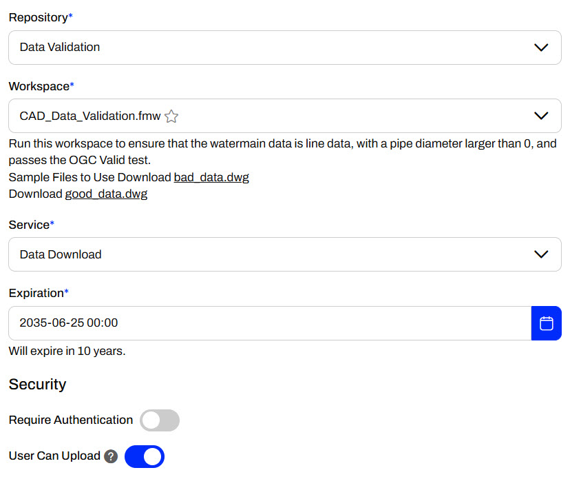
You also have the option to configure default settings for your workspace's published parameters or hide the parameters from the end-user in the App.
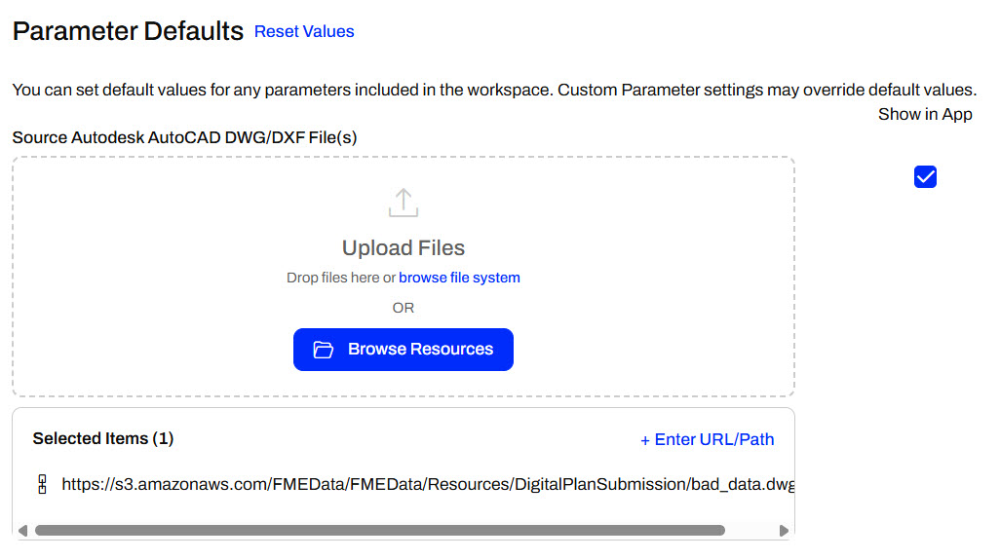
Apps also have customization options, such as uploading banners, images, logos, and changing colors. Thus, you can make your Apps look like they don't use FME at all!
Once satisfied with your App settings, click OK to create it. It's okay if you missed something; you can edit your Workspace App from the Manage Workspace Apps anytime.
Accessing and Sharing Apps
After you create your App, FME Flow will present you with the URL and security details. You may copy the App URL to share it, or open it in the browser by clicking the link.
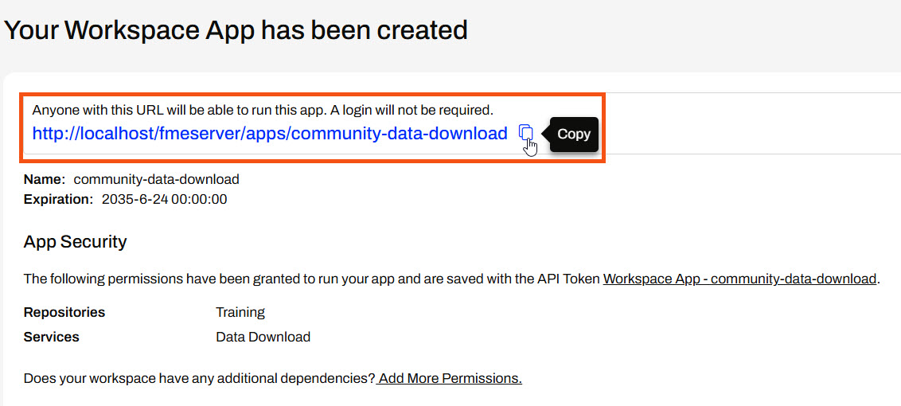
The FME Flow Workspace App link will open a simplified Run Workspace page.
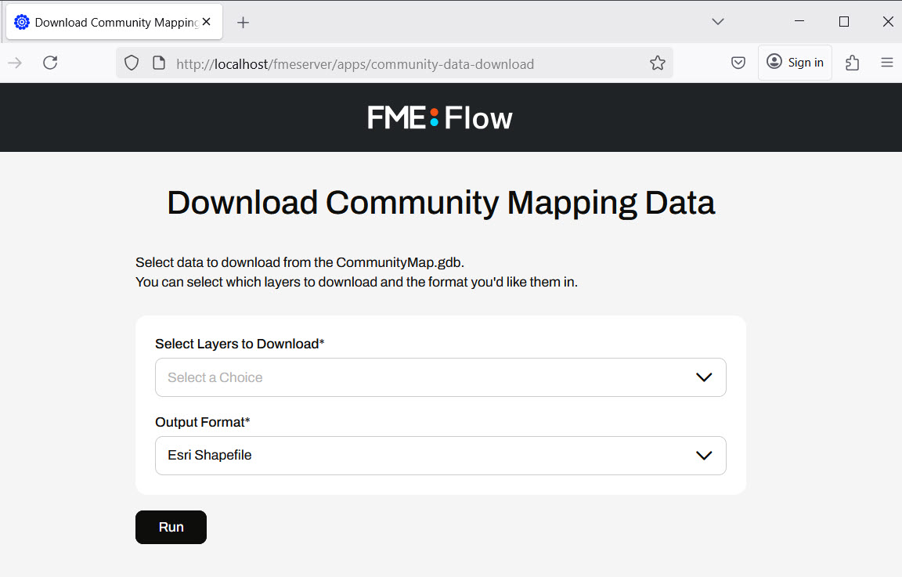
Exercise

Jennifer is creating a public self-serve data portal for users to access and download data. Jennifer must share an FME workspace with the public to configure and run the portal. However, most people do not have any FME experience, and even if they did, how would Jennifer's organization give everyone an FME account to access FME Flow? To overcome this, Jennifer decides to use an FME Flow Workspace App to share the workspace and make it publicly accessible.
Follow along with Jennifer as she creates an FME Flow App to share a workspace publicly.
1) Open Starting Workspace
Jennifer opens her workspace in FME Workbench (C:\FMEData\Workspaces\DeployWorkflowsWithFMEFlow\share-workspaces-as-apps.fmw). The workspace reads data from a CommunityMap file geodatabase and writes it using a generic writer. Jennifer has already created two user parameters: FEATURE_TYPES to allow the user to select the feature types from the database to access, and OUTPUT_FORMAT to control the format in which the output data is delivered.
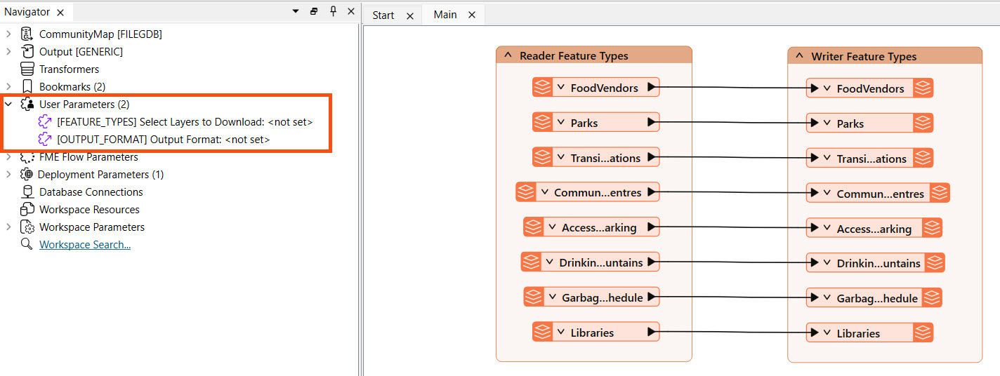
2) Publish to FME Flow
Jennifer publishes her workspace to FME Flow, puts it in the Training repository, and registers it with both the Data Download and Job Submitter services.
Expand for Steps on Publishing to FME Flow
The publishing wizard sets all configurations for publishing workspaces to FME Flow. To open it, click Publish in the top toolbar.
The first steps are to confirm your FME Flow connection, select a Repository to house the workspace, and optionally alter the workspace's name. To create a new Repository, click New and enter its details.
Optionally, you may Upload data files to publish the workspace's source data files to FME Flow along with the workspace. You can control which files from the Select Files... option.
Next, if your workspace has any connections, you may select whether or not they will also be published to FME Flow.
The last step of publishing is to register services for the workspace to use on FME Flow.
After publishing, the translation log generates a report on the publishing and provides a direct link to run the workspace on FME Flow.
3) Run Workspace on FME Flow
To ensure her workspace works as expected on FME Flow, Jennifer goes to the Run Workspace page and configures it to run. She uses the Data Download service, selects a few layers to download, and selects an output format.
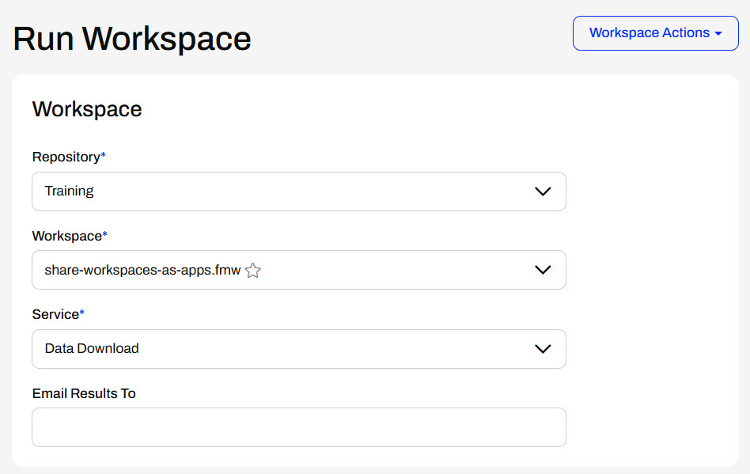
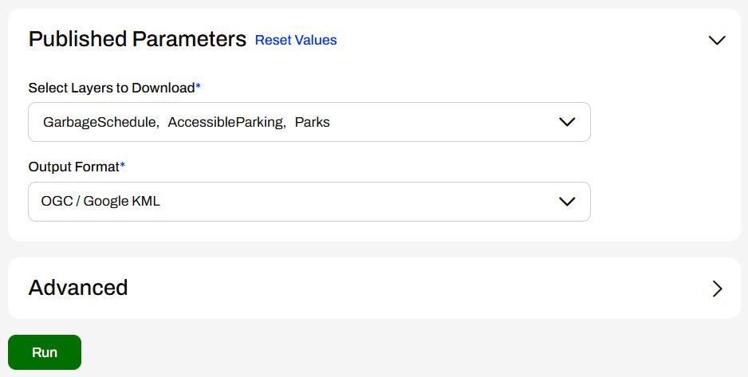
Jennifer clicks Run, and once FME Flow processes the workspace, she clicks the Data Download URL to download and inspect the data.
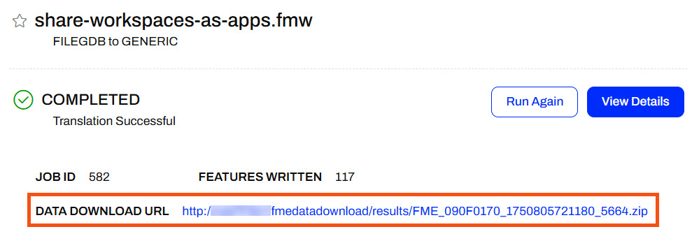
Jennifer downloads the data, extracts the zip folder, and inspects the data in FME Data Inspector. This confirms that the workspace runs as she expects, so she can safely turn it into a Workspace App now.
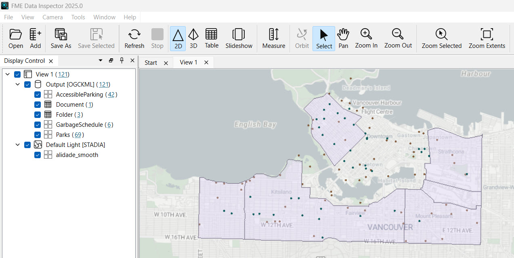
4) Create Workspace App
Jennifer navigates back to FME Flow and opens Create Workspace App. She names it community-data-download and gives it a title and description.
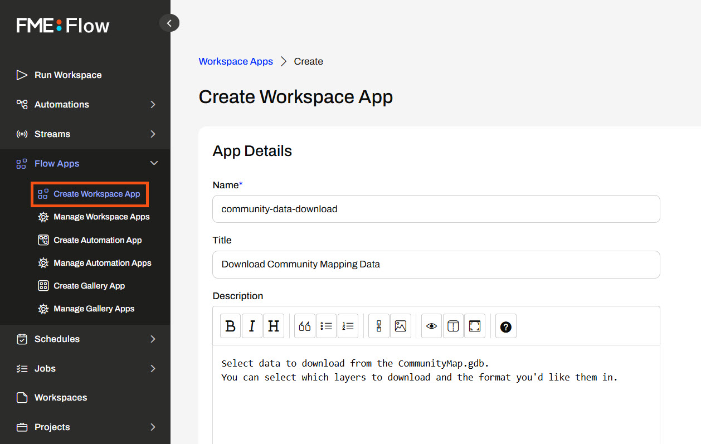
Jennifer scrolls down and selects the App to use the workspace she just published and ran on FME Flow with the Data Download service.
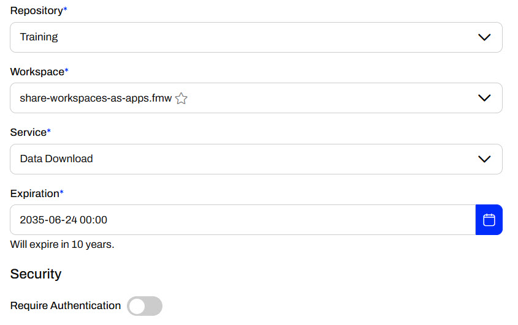
Jennifer leaves Require Authentication off so she can share the App publicly, and non-FME Flow users can access and run it.
Next, Jennifer expands Parameter Defaults to configure the workspace's published parameters. She leaves both selected to show in the app. Jennifer doesn't specify any default value for Select Layers to Download and assigns Esri Shapefile as the default Output Format because she predicts it will be a popular format.
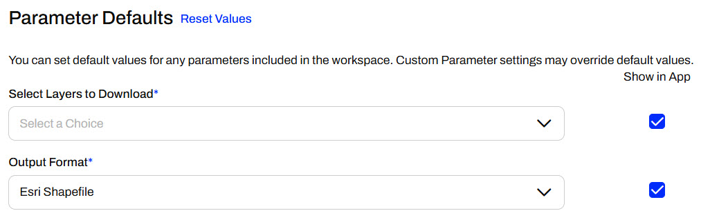
The last configuration option for the Workspace App is the Customize section. Jennifer can add banners and icons or change the app's color to tailor it to her organization. For now, Jennifer skips these options and clicks Create to finish making her App.
5) Share and Access Workspace App
Once FME Flow creates the App, it displays the App URL. Jennifer may copy the URL to share it.
Then, she clicks the URL to open the App in a new tab. She selects some layers to download and clicks Run to run the App, which runs her workspace behind the scenes.
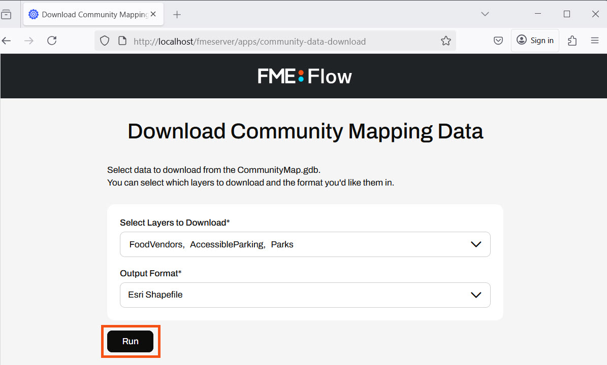
Like running a workspace, the App displays as Running while the FME Engines process the workspace. Once complete, the App presents the user with the Data Download URL.
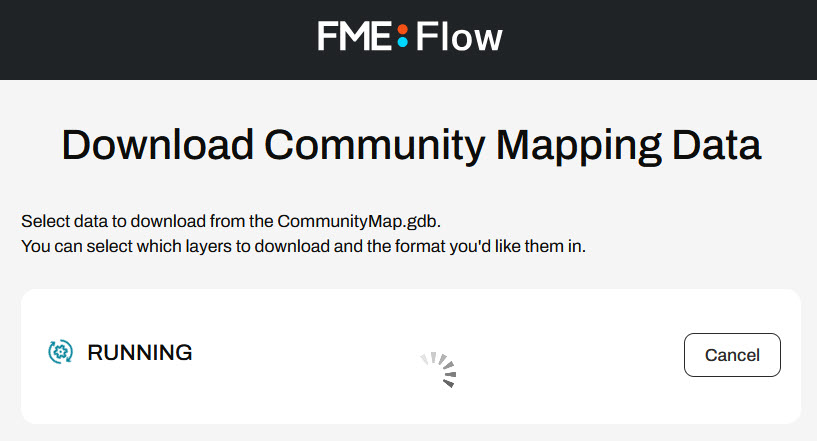
Jennifer clicks the URL and inspects the output data again.
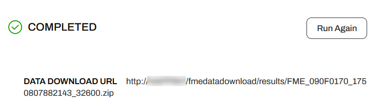
Jennifer has successfully created a Workspace App to share FME functionality and data with non-FME users. She and other users can share, access, and run the App from the URL she copied.